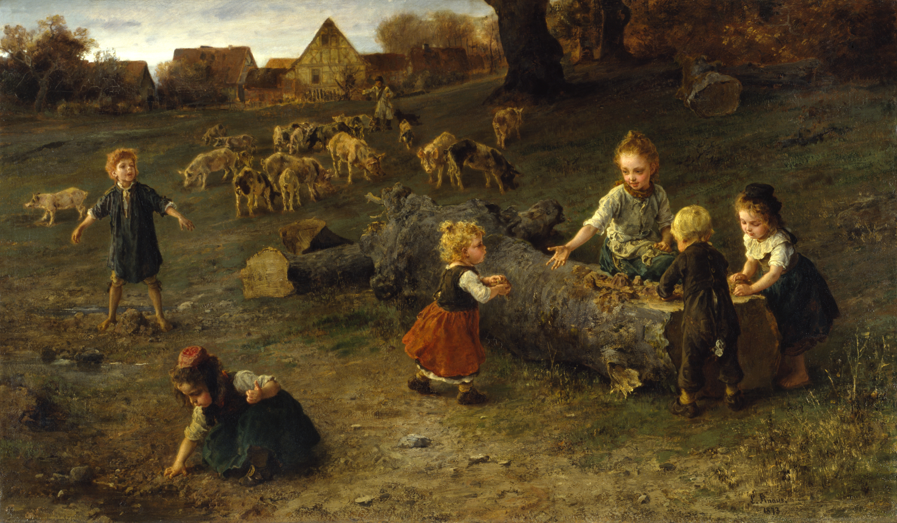

Poems
Two Poems: The Great Work, August

The Great Work
You were a funny way to breathe The insect buzz, all eyebrows knit And lying to the bed of blades Screaming your knees green. See, girls that age are boys that age: Pail blue and weeping buckets For lunch. Back then it was A science, the turning of things: Your playing rugby, my stuck On dolls. I made them do things To each other I wouldn’t, like bear Witness. We used to call it gold, What we don’t know what to do with. Once recess was for mud, mud was Pie and skirts pheromonic. And knees, Rapiered in earthworm conquest. The clover came as a drawing short In guts, my fresh-lawned makings Plucked white like one hair, play-pretend Utilitarianism our dirt dessert garnish. We stared for a second, then stick bugs.
August
I’m on my last Rome. I was doing it wrong. I fought all my battles downhill, from Hamlet to Pepperell, Massachusetts. I spent that winter alone in my room like Friday nights couldn’t happen in the cold. My window didn’t open, my bed was a heap of not-put-away laundry. A fly appeared in the center of my vision. I don’t know where it came from, this vestige of last summer. I crushed it in my first clap, as if to punish you for having a past. I got lucky. These things always disappear in front of your eyes. I rubbed my hands together and checked my palms to make sure it left a black trail of dying.
Sophie Sardari is a writer. She resides in New York, in the tradition of many writers before her.